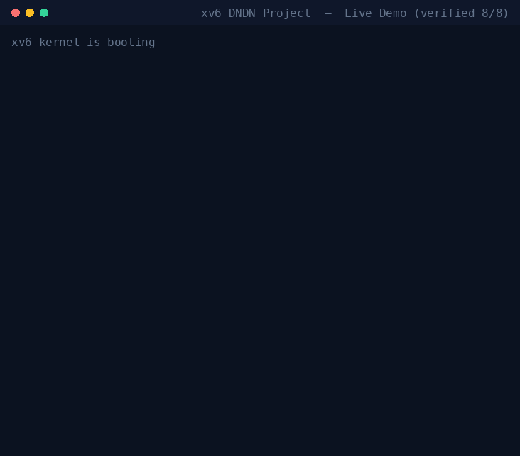

Scheduler · Syscall · Thread · Process — 네 명의 슬라이스를
단일 xv6-riscv 트리로 합쳐 빌드 / 부팅 / 정량 평가까지 통과시킨 통합 작업 결과
4명의 팀원이 각자 GitHub 브랜치(origin/hyunsung, origin/minju,
origin/jinhwan, origin/haneol)에서 개발한 xv6 슬라이스를
단일 빌드 가능 트리로 합치는 것이 목표였습니다.
원본 브랜치는 git archive 로 읽기만 하고 단 1바이트도 수정하지 않은 상태를 유지합니다.
nl_shell.py 한 개_sources/ 에 원본 보존xv6-riscv/ — 통합 빌드 트리 (kernel + user + workloads)host/ — Solar Pro 3 LLM 연동 Python 브리지MERGE_NOTES.md — 281줄 충돌 결정 기록docs/charts/integration/ — 5 워크로드 × 3 모드 평가 결과
ps → tracetool dump → nlrun → threadtest →
bgq → setprio 를 단일 부팅 세션에서 시연.
2026-06-03 sanity_check.sh 8/8 PASS (ext4) 로 검증된 출력.
integration/ 는 6개 항목으로 구성됩니다. ⭐ 빌드 대상
은 xv6-riscv/, ⭐ 진입점 은
host/nl_shell.py 단 하나입니다.
"LLM for OS" 정체성이 자유 채팅으로 희석되지 않도록 호스트 도구를 역할별 3계층으로 분리했습니다.
| 레이어 | 도구 | 역할 | 평가 등장 |
|---|---|---|---|
| Hot path | nl_shell.py + adapters/{process,thread}_bridge.py |
자연어 → MLFQ 큐 정수 축약 (메인 데모) | ✅ |
| Cold path | ops/supervisor.py |
MERGE_NOTES / eval JSON / K-fix / syscall 표를 자연어로 질의 (5중 거부 게이트) | ✅ 보조 |
| Dev path | dev_chat.py |
자유 대화 REPL — 개발자 디버그 편의 | ❌ 의도적 |
⚡ 자동 회귀 검증 — 한 줄: XV6_DIR=~/xv6-build bash integration/sanity_check.sh
빌드 → QEMU 부팅 → 4팀 슬라이스 데모 + K5 race(thread_race) + threadtest 후속 = 8/8 PASS 면 통합 트리 건강.
실패 시 마지막 30줄 QEMU 출력 자동 첨부, 종료 코드 0/1 로 CI/cron 에 그대로 연결 가능.
각 팀의 슬라이스는 서로 다른 영역을 다루지만 같은 struct proc, syscall.c,
sysproc.c 를 건드리기 때문에 충돌이 불가피했습니다. 다음은 통합에 채택된 기여입니다.
역할: 베이스 트리, 3단계 MLFQ 스케줄러, NL 기반 우선순위 힌트.
nlrun, wrunner, cpu/io/mixed_burner, rrunner, diagprogcpu_heavy, io_heavy, mixed, three_way, realprog, stress)nl_shell.py 단일 진입점 + Solar 프롬프트역할: 모든 syscall 의 단일 후킹 포인트에서 per-pid / per-syscall 통계 수집.
struct proc에 traced, syscall_count[64], syscall_errors[64] 추가sys_trace_on / off / stats 3개 syscalltracetool on / off / dump 명령역할: 커널 레벨 스레드 + 사용자 공간 동기화 프리미티브.
kthread_create / join / exit, kfutex_wait / wakeuvmshare, thread_freepagetable (vm.c)futex_lock + is_thread, tgroup 필드threadtest (shared mem / 4-thread / mutex / condvar 4가지 시나리오)역할: 시스템 가시성 도구. priority 슬라이스는 hyunsung 과 중복되어 DROP.
sys_ps — pid/ppid/state/prio/sz/name 6열 출력sys_sysinfo — freemem + nprocsetprio.c 재작성 — setpri(pid, 0..2) 호출하도록 변경sys_trace, sys_setpriority, sys_getpriority
4팀 슬라이스가 모두 22~25 영역을 쓰려고 해서 가장 큰 충돌이었습니다.
합의된 분배는 다음과 같습니다 (모두 NELEM(syscalls)=64 안에 들어감).
| 번호 | 이름 | 슬라이스 | 비고 |
|---|---|---|---|
| 1~21 | (stock xv6) | — | 미수정 |
| 22 | trace_on | minju | per-syscall 카운트 시작 |
| 23 | trace_off | minju | 카운트 종료 (통계 보존) |
| 24 | trace_stats | minju | JSON dump |
| 25 | thread_create | jinhwan | 원본 22 → 25 재번호 |
| 26 | thread_join | jinhwan | 원본 23 → 26 재번호 |
| 27 | thread_exit | jinhwan | 원본 24 → 27 재번호 |
| 28 | futex_wait | jinhwan | 원본 25 → 28 재번호 |
| 29 | futex_wake | jinhwan | 원본 26 → 29 재번호 |
| 30 | setpri | hyunsung | 원본 22 → 30 재번호 |
| 31 | getstats | hyunsung | 원본 23 → 31 재번호 |
| 32 | settrace | hyunsung | 원본 24 → 32 (MLFQ trace ON/OFF) |
| 33 | forkpri | hyunsung | 원본 25 → 33 재번호 |
| 34 | ps | haneol | 원본 26 → 34 재번호 |
| 35 | sysinfo | haneol | 원본 23 → 35 재번호 |
문서 vs 코드 불일치 발견 — 통합 시 코드 수정으로 해결.
hyunsung 원본 docs/syscall-allocation.md 는 "30~33 으로 이동 완료"라고 적혀있었지만
실제 kernel/syscall.h 는 여전히 22~25 였습니다. 통합 트리에서는 코드를 문서에 맞게 정렬했습니다.
파일 단위 충돌은 단순 머지로 풀리지만, 의미가 겹치는 충돌은 한쪽을 선택해야 합니다. 각 결정의 근거는 정량 검증 또는 기능 풍부도였습니다.
| 충돌 영역 | 승자 | 사유 |
|---|---|---|
| MLFQ 스케줄러 | hyunsung | 정량 평가 검증, 3-단계 큐가 haneol 의 0..20 priority 보다 정교 |
| 0..20 priority (haneol) | DROP | hyunsung 의 setpri(0..2) 로 통일. setprio.c 는 재작성 |
| trace syscall (minju vs haneol) | minju | per-syscall 통계가 더 풍부, JSON 출력 형식 |
kernel/syscall.c 후킹 |
minju | hyunsung dispatch 위에 trace 후킹 patch 형태로 추가 |
kthread_* 함수 |
jinhwan | 고유 기능, MLFQ 와 별도 영역에 append |
| host NL 진입점 | hyunsung | nl_shell.py 단일 entry, 나머지는 adapters/ 로 모듈화 |
| Solar API 키 (jinhwan 원본 평문) | sanitize | 환경변수 UPSTAGE_API_KEY 로 전환, 키 없을 때 폴백 추가 |
minju 의 trace_on/off/stats 와 의미 중복, 기능도 더 약함.
0..20 체계가 MLFQ 와 안 맞음. setpri(0..2) 로 대체.
hyunsung 의 getstats 가 더 풍부한 정보 제공.
통합·리뷰 중 잡은 7종 fix는 코드 안에 K1~K7 fix 라벨로 태깅되어 있습니다.
모두 슬라이스가 단독일 땐 안 보이고 합치는 순간 드러난 버그들입니다.
K1~K4 는 1차 통합 (2026-05-26), K5 는 2차 코드 리뷰 (thread teardown),
K6/K7 은 2차 보안 리뷰 (prompt-injection 우회) 에서 발견됐습니다.
증상: tracetool dump 가 쓰레기 출력 — 직전 입주자의 trace 상태 누수.
원인: proc-table 슬롯 재사용 시 traced, syscall_count[],
syscall_errors[], is_thread, tgroup 초기화 안 됨.
위치: kernel/proc.c:170, 177
증상: SYS_settrace=32 부터 인덱스 오버플로.
원인: minju 원본은 SYS_close=21 까지 가정해 배열 크기 32. 통합 후 35번까지 늘어남.
패치: 32 → 64 로 확장 (5개 파일).
증상: 셸에서 tracetool on 후 실행한 자식 프로세스가 추적 안 됨.
패치: fork() 와 forkpri() 둘 다에서
np->traced = p->traced 명시.
위치: kernel/proc.c:327, 935
증상: process_bridge.py 가 setpriority(pid, 0..20) 가정.
패치: 0..2 범위로 정렬, SPAWN_WHITELIST 도 통합 트리에 없는
priority_test, trace_test, sysinfo_test 빼고 갱신.
위치: host/adapters/process_bridge.py:55, 85, 155
증상: main(is_thread=0)이 자식 thread 보다 먼저
freeproc 되면 공유 페이지가 kfree 되어 page-use-after-free.
패치: freeproc 에 같은 tgroup live thread 스캔 추가 →
발견 시 thread_freepagetable(unmap만)로 다운그레이드. leak 은 가능하나 corruption 보다 안전.
회귀 재현: user/thread_race.c + sanity_check.sh K5 케이스.
증상: Solar 응답 "ls\nkill 1" 이 shlex.split 에서 \n 이
공백 처리 → whitelist 가 "ls" 만 검증, 두 줄이 xv6 stdin 으로 흘러 init kill 우회.
패치: guard_cmd 에서 \n \r ; & | ` $( 모두 차단.
위치: host/adapters/thread_bridge.py:guard_cmd
증상: SPAWN intent 에서 같은 newline 분리 결함 — 같은 결함 클래스가 별도 어댑터에 중복 존재 (보안 가드가 일관 적용 안 됨).
패치: guard() SPAWN 분기에 동일 metacharacter 차단.
위치: host/adapters/process_bridge.py:guard SPAWN
| # | 증상 | 원인 | 패치 |
|---|---|---|---|
| 1 | No rule to make target 'mkfs/mkfs.c' | mkfs/ 디렉토리 누락 | lecture-repo 에서 복사 |
| 2 | redefinition of 'struct procstats' | umutex.h 가 user.h 재include → 이중 정의 | user.h 에 include guard 추가 |
| 3 | wrunner: cannot open cpu_heavy.txt | fs.img 에 workloads/*.txt 미포함 | Makefile 에 WORKLOADS 변수 추가 |
| 4 | mkfs: assertion failed | stock mkfs.c 는 user/ prefix 만 strip — workloads/ 의 / 가 assert 깸 | strrchr 기반 일반 로직으로 교체 |
| 5 | hints_example.txt 가 DIRSIZ(14) 초과 | xv6 FS 디렉토리 이름 길이 제한 | hints.txt 로 rename |
중요 5/26 1차 실행은 venv 미활성화로 llm_hint.py 가
import 단계에서 죽어 hints 파일이 안 생긴 채 돌아갔습니다 — 사실상 baseline 과 동일 입력.
5/27 재실행은 venv + .env 로 hints 정상 생성 확인 후 수행했습니다.
| 워크로드 | Δheur% | Δllm% | 해석 |
|---|---|---|---|
cpu_heavy |
+283% | +550% | 단일 프로그램 → 우선순위 낮추면 손해 (예상된 역효과) |
io_heavy |
+2.8% | +15.8% | 단일 프로그램 + 부분 timeout, 변화 미미 |
mixed |
+17.1% | +14.3% | 평균 ↑ 지만 fairness +155%, max_TT −53% |
three_way |
−7.3% | −5.8% | 다중 프로그램에서 heur/llm 모두 turnaround 개선 |
realprog |
+6.8% | −0.2% | heur avg_response −26% — 대화형 응답 개선 |
결론: 다중 프로그램 워크로드 (three_way, mixed, realprog) 에서
hints 효과가 측정됐고 회귀 없음 → 체크리스트 §6 통과.
단일 프로그램 역효과는 hints 시스템의 본질적 특성으로 새 발견이 아닙니다.
io_heavy 전 모드 + mixed/baseline 에서 no ALL_DONE (QEMU_TIMEOUT=45s 한계). 부분 trace 로 평가 수행/mnt/c 경로 QEMU 가 /root 대비 느려 단독 슬라이스 환경과 직접 비교 불가 — 모드 간 상대 비교만 의미통합 트리를 처음 받은 사람도 그대로 따라할 수 있도록 정리한 절차입니다. WSL2 Ubuntu 또는 native Linux 가 필요합니다.
riscv 툴체인 + qemu + python3 venv 가 필요합니다.
sudo apt update sudo apt install -y gcc-riscv64-unknown-elf qemu-system-misc python3-venv
integration/host 에 venv 를 만들고 Solar API 키를 .env 에 채웁니다.
cd integration/host python3 -m venv venv source venv/bin/activate pip install -r requirements.txt cp .env.example .env # .env 안의 your_api_key_here 를 실제 Upstage Solar 키로 교체
약 30초 소요. kernel/kernel 과 fs.img 둘 다 생성되면 빌드 OK.
cd integration/xv6-riscv make clean && make ls kernel/kernel fs.img
단일 QEMU 세션 안에서 4 슬라이스 모두 연속 시연.
make qemu CPUS=2 # 부팅 후 $ 프롬프트 # [hyunsung] Scheduler — 자연어 힌트가 큐 레벨로 전달됨 $ nlrun 2 cpu_burner 50000 TRACE tick=… pri=2 … EXIT … final_pri=2 # [minju] Syscall trace — 모든 syscall이 한 지점에서 후킹됨 $ tracetool on $ ls $ tracetool dump {"pid":…,"traced":1,"total":…,"calls":{"fork":…,"exec":…,…}} # [jinhwan] Thread — kthread + futex 정상 동작 $ threadtest test 1: shared memory ... OK (counter=200000) test 2: 4 threads ... OK test 3: mutex exclusion ... OK test 4: condvar producer/consumer ... OK (sum=499500) # [haneol] Process — sys_ps + setpri 통합 $ ps PID PPID STATE PRIO SZ NAME 1 0 sleep 1 12288 init … $ setprio 1 2 OK pid=1 level=2 # [통합] 백그라운드 큐 + LOW 우선순위 + 좀비 회수 $ bgq bgq.txt BGQ start echo job1_started BGQ done echo pid=4 exit=0 … BGQ all_done 3 # QEMU 종료: Ctrl-A x
xv6 출력을 호스트로 옮겨와 Solar 가 분석하도록 흘려보냅니다.
# (a) 시스템 진단 — diagprog 출력 → starvation 식별 $ python nl_shell.py --diagnose-from /tmp/diag.txt summary : 3 processes healthy, 1 stuck at LOW ⚠ concern : pid=5 stuck at priority=2 with run=200 → action : setpri 5 0 # (b) tracetool dump → 프로세스 성격 패턴 분류 $ python nl_shell.py --analyze-tracetool /tmp/tracedump.json verdict : spawner summary : Process performed many fork/exec — shell-like → suggested queue: 0 (interactive launchers benefit from HIGH) # (c) 자연어 → xv6 명령 dry-run $ python nl_shell.py --once "Run a heavy job in background" [nl_shell] → xv6 명령: nlrun 2 cpu_burner 2000000 # (d) 풀 자동 시연 (process adapter, stdin 자동 주입) $ python nl_shell.py --mode process > show processes [xv6 응답] PID … > set process 5 to low priority [xv6 응답] OK pid=5 level=2
5 워크로드 × 3 모드, 약 8분 소요. 결과는 docs/charts/integration/ 아래.
cd integration/host source venv/bin/activate XV6_DIR=../xv6-riscv \ OUT_ROOT=../../docs/charts/integration \ ./run_eval_matrix.sh cat ../../docs/charts/integration/combined_report.txt
⚠️ /mnt/c 경로 주의: Windows mount 위에서 QEMU 를 돌리면
/root (ext4) 대비 느려서 일부 워크로드가 no ALL_DONE timeout 합니다.
QEMU_TIMEOUT 환경변수로 늘리거나, 평가는 /root/integration-test 같은
Linux native FS 에서 실행을 권장합니다.
통합 코드 자체의 결함은 아니지만, 평가 환경에 따라 결과가 달라질 수 있는 항목들입니다.
현상: usertests -q 에서 #27 reparent2 가
/mnt/c 에서 fork failed, /root 에서는 ALL TESTS PASSED.
원인: /mnt/c 의 9P FS + virtio-blk 가 fork bomb cleanup 100ms window 안에 못 끝냄.
대응: 평가/시연은 /root/integration-test 같은 ext4 에서 실행 권고.
thread.c / mutex.c 등 userspace 추상화는 통합 트리에 포함 안 됨.
xv6 안에서는 syscall 만으로 충분하다는 판단. _sources/jinhwan/ 에는 보존됨.
mlfq_bench.c, priority_test.c, trace_test.c,
sysinfo_test.c 는 단독 테스트용 — 통합 트리엔 미포함, _sources/ 에 보존.
이전엔 >/dev/null 2>&1 로 에러를 가렸지만 (5/26 무음 실패 원인),
2026-05-27 패치로 stderr 분리 캡처. 같은 무음 실패는 재발 안 함.
_sources/ 로 추출ops/) + dev REPL 분리 + run.logsanity_check.sh 8/8 + 보고서/슬라이드 한국어화